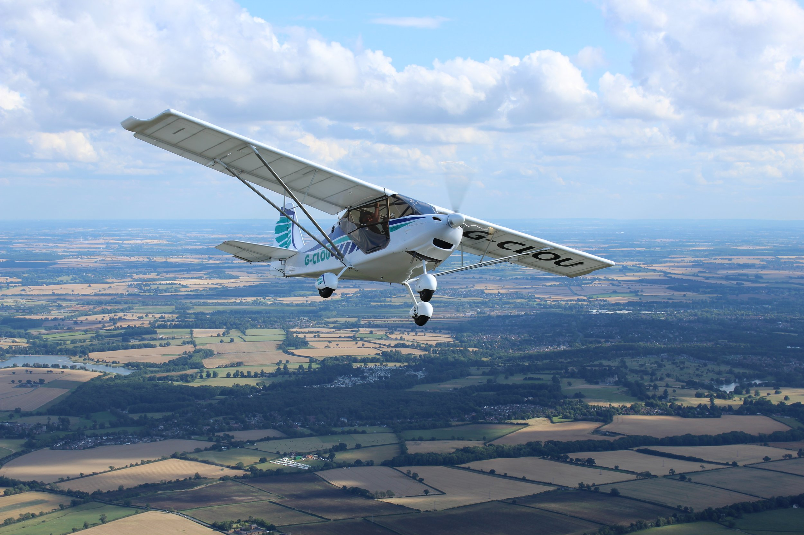
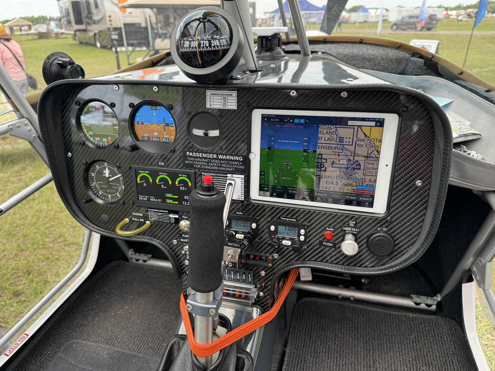
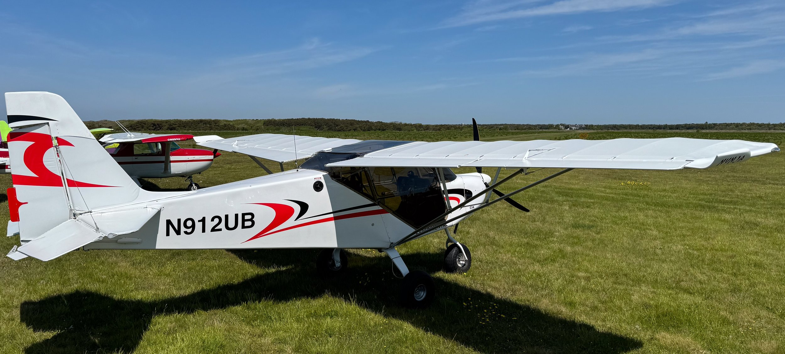

The SkyRanger is everything a light-sport aircraft kit should be — low price, simple to build, and a rugged design. It's finally arrived: a light-sport airplane for the price of an SUV. Britain's best-selling fixed-wing microlight is now better than ever and available once again in the US. Build your SkyRanger in a matter of weeks, not years — no special skills are required. With its simple tough structure and STOL performance, the SkyRanger is ready to make your aviation dreams come true.

The Skyranger was created in Toulouse, the capital of the French aviation industry by Phillippe Prevot and BestOff engineering. Phillippe was well known as an innovator in flexwing microlight design; moving to fixed-wing he designed the first Skyranger in 1991, with the first flights of the prototype in 1992.
The design brief was to produce a high-performance fixed-wing aircraft of conventional layout which would conform to the Microlight category definition, with good creature comforts, whilst doing so with the simplest possible construction, in order to create a machine with good affordability, whilst being suited to amateur construction, and offering ongoing ease of maintenance.
During the design and development phase, Phillippe partnered with one of the most respected aeronautical colleges – ENSICA, under the direction of Jean Poulain. This partnership enabled detailed professional studies to be made of structural elements and optimization of flight performance.
Initially, the production was in France, where the first 200 kits were manufactured between 1993 and 1998. Following this, the manufacture of the main structure was subcontracted to Aeros in Kiev – Ukraine. At the same time, the design was reviewed and updated with several improvements. Aeros is a well-respected company primarily known for its Hang glider production, where they are class leaders with several world championship wins to their credit. Formed during the decline of the Former Soviet Union, most of the staff are highly trained aviation engineers, formerly working in the Antonov aircraft factory in Kiev.
Since then over a further 1300 Skyranger series aircraft have been produced, bringing total production to over 1500. The Skyranger proving extremely popular in Europe, the USA, South America, Australia, and many other parts of the globe.
The UK connection is provided by Flylight Airsports Ltd, which recognized the potential market for the Skyranger in the UK. In partnership with BestOff, Flylight put the Skyranger through the tough UK certification system, and several changes and improvements were incorporated during the process.
The first kits were delivered to UK customers in 2003. The Skyranger was extremely well received in the UK, rapidly becoming a best seller, and now has the prestige of being the most numerous fixed-wing microlight type on the UK register.
The first variant in the UK was the Skyranger 'classic', initially certified with the Rotax 912 80hp engine option. The range of approved engines was then expanded to include the 65hp Rotax 582 two-stroke, 85hp Jabiru 2200, and the 100hp Rotax 912ULS.
This was followed by the introduction of the Skyranger Swift model. The Swift shares the same fuselage design with the Skyranger classic but features a shorter wingspan. This takes advantage of the 80hp and above engine options, and delivers higher cruise speeds. At the same time as the introduction of the Swift, several other improvements were introduced to the range, including the more durable Xlam covering option, and upgraded interior options.
Then came the Skyranger Nynja. The Nynja shares the same wing frame with the Swift, but features a redesigned fuselage structure, with full-composite panels to form the exterior, giving enhanced aesthetics, reducing drag, and increasing performance. As befits the top of the range machine it also has several other enhancements as standard equipment.
After this the Swift was revisited, to incorporate some of the features and development work learned with the Nynja project. Renamed Swift 2, it is distinguished from the earlier model with a new vertical tail shape, doors, instrument panel, exhaust system, and undercarriage shared with the Nynja. The cowlings have been face-lifted too. The result was a lighter structure, enhanced visibility, and better looks, whilst retaining its unbeatable low entry price.
In 2021 the Swift 3 was introduced with further refinements and commonality with Nynja details.
The Swift 3 and Nynja now form the current range with standard engine options rationalized to the Rotax 912UL (80hp) and 912ULS (100hp).
Not confined to operation within the Microlight category, both Nynja and Swift 3 have LS (Light-Sport) variants with small detail changes that allow them to be operated in the light aircraft category with increased maximum takeoff weights and load-carrying capability.
